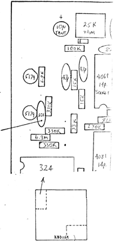
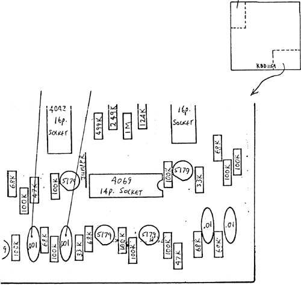

|
Changes for the Touch Activated Keyboard Sequencer
 The following component changes are recommended an the KBD 115A PC board in the TKB. 1. Replace indicated capacitor with .001 mfd capacitor. This will decrease the length of the pulses from the KP output, providing faster response from the touch pads. 2. Replace the two capacitors with .001 mfd capacitors. This will increase the reliability when sequencing the unit. Without this modification, some erratic advancing may show up when the unit is being clocked. If the unit sometimes advances two stages instead of one, seeming to skip over a stage, this is usually the problem. Due to component tollerances, some units may require 470 pf capacitors rather than the .001 mfd supplied with this modification kit. The TKB is somewhat sensitive to the duty cycle of the pulse applied to the CLOCK input. If a DSG or DTG is used to sequence the TKB, settings of very fast FALL times will produce Pulses at the DSG and DTG Trigger Outputs which stay 'hiqh' for most of the cycle, and only go 'low' for the length of the FALL time. If a condition of erratic sequencing becomes a problem, the FALL time should be increased, and the RISE time decreased to qet the same rate of sequencing, but with a shorter duty cycle. |
|

|